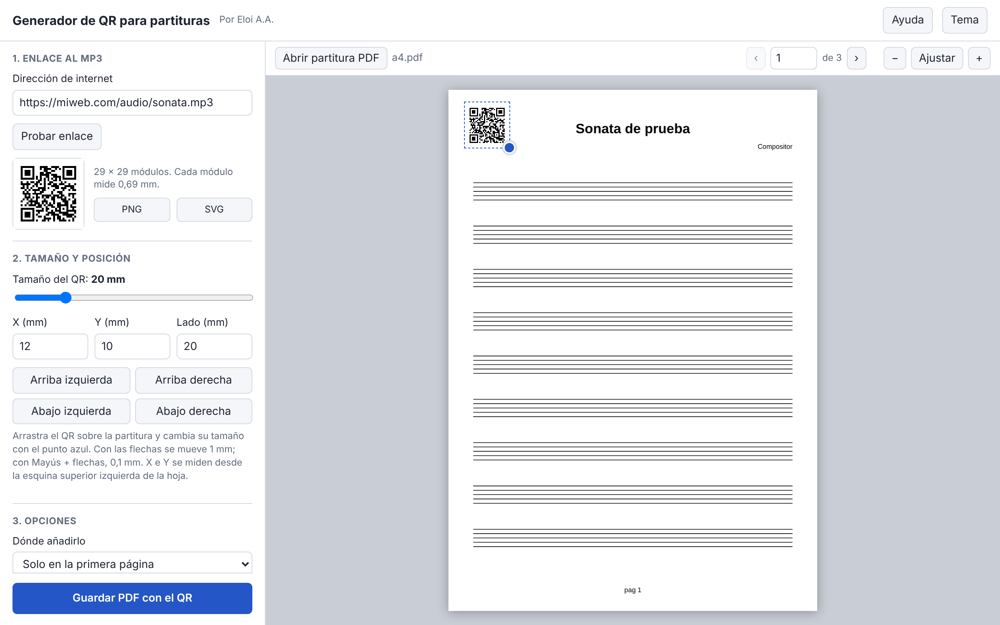
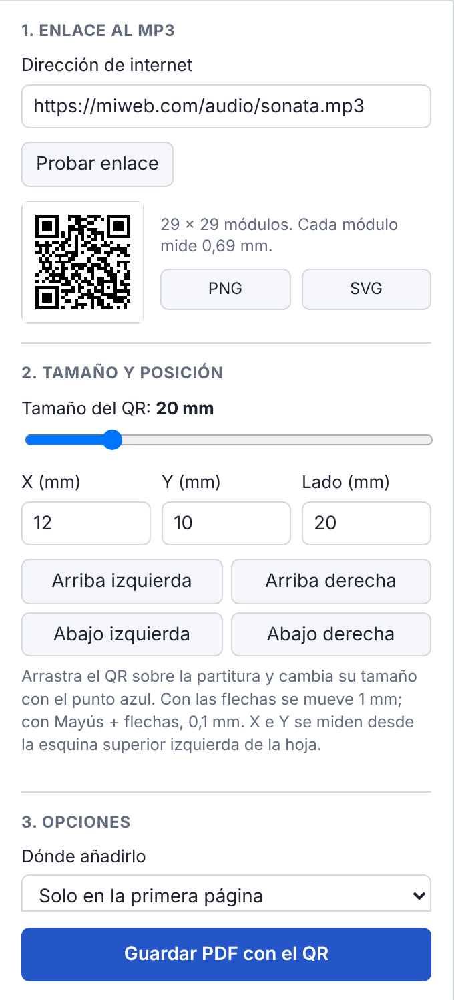

QR-PDF · Manual de uso
Generador de QR para partituras · Por Eloi A.A.
Contenido
1. Qué es y para qué sirve
QR-PDF crea un código QR con el enlace a un archivo de audio (por ejemplo, un MP3 subido a internet) y lo coloca sobre una partitura en PDF. Quien tenga la partitura en papel puede escanear el código con el móvil y escuchar la obra.
- Funciona sin conexión: es un único archivo HTML que se abre con el navegador.
- Nada se sube a internet: la partitura se queda en tu ordenador.
- El QR se añade como dibujo vectorial, así que se imprime nítido a cualquier tamaño y la partitura no pierde calidad.
- Se guarda siempre una copia nueva; el PDF original no cambia.

2. Cómo abrir el programa
- Desde internet: entra en la página del proyecto y pulsa «Abrir el programa».
- Sin internet: descarga
QR-PDF.html, guárdalo donde quieras (disco, USB…) y ábrelo con doble clic. Sirve cualquier navegador actual: Chrome, Edge, Firefox o Safari.
3. Uso en cuatro pasos
- Pega el enlace del MP3 en «Dirección de internet». El QR aparece al momento en la miniatura. Con «Probar enlace» se abre la dirección en el navegador para comprobar que funciona.
- Abre la partitura con «Abrir partitura PDF», con «Elegir archivo» o arrastrando el PDF a la ventana.
- Coloca el QR. Aparece arriba a la izquierda, junto al título. Muévelo o cambia su tamaño si hace falta (apartado 4).
- Pulsa «Guardar PDF con el QR». Se descarga una copia con el mismo nombre terminado en
_QR.pdf; por ejemplo,sonata.pdf→sonata_QR.pdf.
Puedes guardar tantas veces como quieras: cada copia parte siempre del PDF original, así que nunca se acumulan dos QR.
4. Mover y cambiar el tamaño del QR

| Quiero… | Cómo |
|---|---|
| Mover el QR | Arrástralo sobre la partitura con el ratón o con el dedo. |
| Cambiar el tamaño | Arrastra el punto azul de la esquina, usa la barra «Tamaño del QR» o escribe el «Lado» en mm. |
| Ajuste fino | ← ↑ → ↓ mueven 1 mm; con Mayús pulsada, 0,1 mm. |
| Una posición exacta | Escribe X e Y en mm: la distancia desde la esquina superior izquierda de la hoja hasta el QR, sin contar el margen blanco. |
| Llevarlo a una esquina | Botones «Arriba izquierda», «Arriba derecha», «Abajo izquierda» y «Abajo derecha». |
| Ver mejor | Botones −, Ajustar y + de la barra superior; ‹ › para cambiar de página. |
El programa recuerda la posición, el tamaño y las opciones, así que la siguiente partitura empieza con el QR en el mismo sitio.
5. Opciones
| Opción | Qué hace |
|---|---|
| Dónde añadirlo | Solo en la primera página (lo normal), solo en la página que estás viendo o en todas. |
| Corrección de errores | Cuanto más alta, mejor se lee aunque el papel se manche o se doble, pero el código tiene más cuadritos. Media (M) suele ir bien. |
| Margen blanco | Espacio limpio alrededor del código, que el móvil necesita para reconocerlo. Lo recomendable son 4 módulos. Además tapa lo que haya debajo. |
| Clic en pantalla | Al ver el PDF en el ordenador, hacer clic sobre el QR abre el enlace. |
| PNG / SVG | Guardan solo el QR como imagen, por si quieres usarlo en otro documento. |
| Tema | Cambia entre aspecto claro y oscuro. |
| Ayuda | Abre un resumen de este manual dentro del programa. |
Bajo la miniatura del QR se indica cuánto mide cada cuadrito (módulo). Si es demasiado pequeño para imprimirlo, el programa avisa en amarillo o en rojo.
6. Preparar el enlace del MP3
El QR guarda la dirección exacta. Por eso:
- El enlace no debe cambiar nunca. Si mueves, borras o renombras el MP3, las copias ya impresas dejarán de funcionar.
- En Google Drive, Dropbox, OneDrive y similares, comparte el archivo con «cualquiera que tenga el enlace». Normalmente se abrirá primero la página del servicio y desde ella se reproduce el audio.
- Un enlace directo al archivo (que termina en
.mp3, por ejemplo en tu propia web o en GitHub Pages) hace que el móvil lo reproduzca enseguida. - Cuanto más corto es el enlace, más sencillo sale el QR y mejor se lee.
- Si escribes la dirección sin
https://, el programa lo añade. Los espacios y las letras como la ñ se convierten automáticamente; debajo del campo se muestra lo que se codifica de verdad.
7. Consejos para imprimir
- Un lado de 20 a 25 mm suele leerse bien con un enlace normal. Si el enlace es largo, agranda el QR hasta que desaparezca el aviso.
- Deja el QR sobre fondo blanco y lejos de pentagramas o texto; el margen blanco ayuda.
- Antes de hacer muchas copias, imprime una y escanéala con el móvil.
- Si la partitura se va a fotocopiar varias veces, sube la corrección de errores a Alta (Q) y agranda un poco el QR.
El QR se coloca encima de la partitura y la tapa en esa zona. Si quedara sobre una nota o el título, muévelo antes de guardar.
8. Problemas frecuentes
| Lo que pasa | Solución |
|---|---|
| «Este PDF está protegido y no se puede modificar» | El PDF tiene contraseña o restricciones. Quita la protección con el programa que lo creó o guarda una copia sin ella. |
| «No se ha podido abrir este PDF» | El archivo está dañado o no es un PDF. Prueba a exportarlo de nuevo desde el programa de partituras. |
| «El enlace es demasiado largo» | Baja la corrección de errores o usa un enlace más corto. |
| Aviso de módulos pequeños | Agranda el QR o acorta el enlace. |
| El móvil lee el QR pero el audio no se abre | Revisa que el archivo esté compartido públicamente y que el enlace no haya cambiado. Comprueba con «Probar enlace». |
| No veo el QR en la página | Está configurado para otra página: lo indica un aviso arriba. Cambia «Dónde añadirlo» o vuelve a la primera página. |